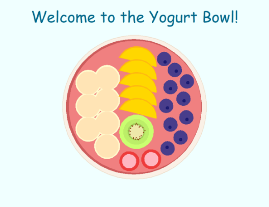
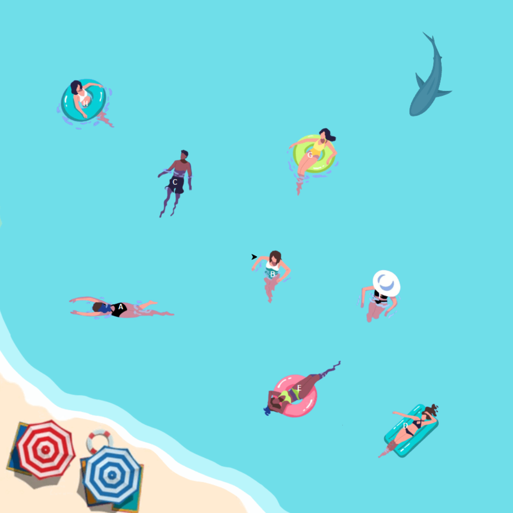
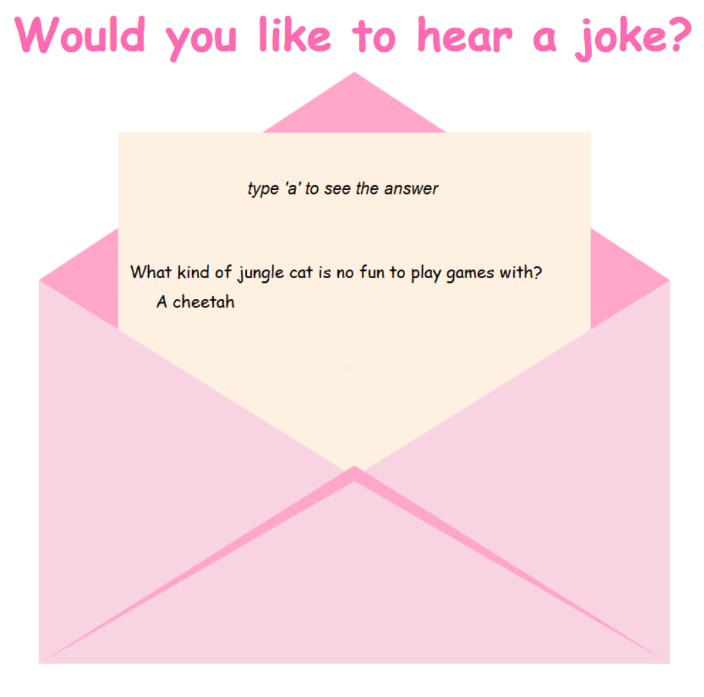
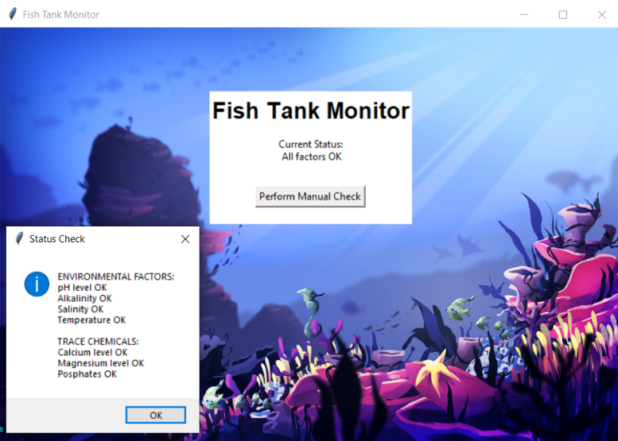
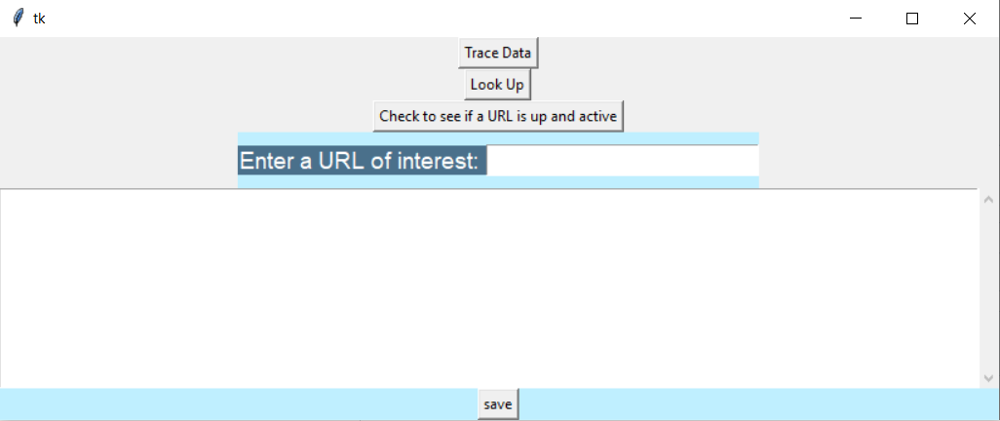
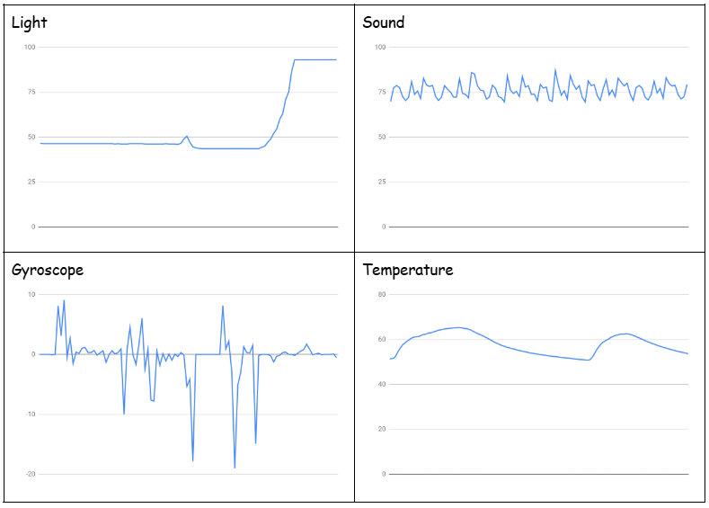

Home
Portfolio
About Me
This is my Portfolio Page!
Make a Yogurt Bowl

This is my 1.1.9 Project. The code allows you to choose between a variety of fruits to customize your bowl! This is an interactive experience with the user that allows yes/no inputs.
Hungry Shark Game

This is my 1.2.5 Project. This is an interactive game with the objective of trying to eat all the people within the time limit. Each letter key is assigned to a character to move the shark. The timer starts when the space bar is clicked and scores a point for each character "eaten".
Get well soon Jokes Card!

This is my 1.3.1 Project. This is an e-card that tells randomized jokes to the reader. The answer is revealed when the key 'a' is pressed. There are cute animations and background music with a get well soon message at the end of the program.
Phishy Fish Tank

This was our 2.1.6 Security project. We managed to fix the errors and get the fishtank to run again.
Scratch Game
This is our FNAF scratch game. It is an interactive game where you have to catch a character within the time limit, if you you get caught it is Game Over.
GUI

This GUI window allows you to enter URLs and check to see if they are active. Each of the buttons have a separate function that work when they are clicked.
3.1.6 Rover Home

This is our 3.1.6 project where we had to figure out where the Rover was located based on descriptions of the Alien Planet. Since the temperatures were smooth, the chirping noises were constant and there was little to no wind we used process of elimination to conclude that the Rover was in the Marsh Lands.